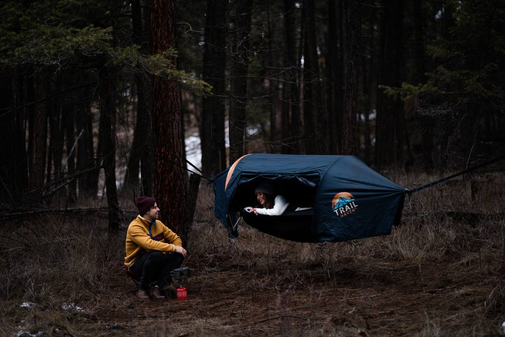
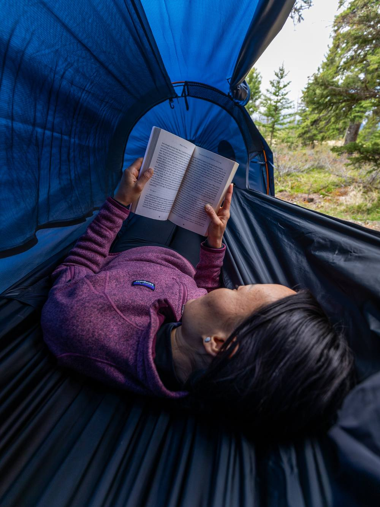
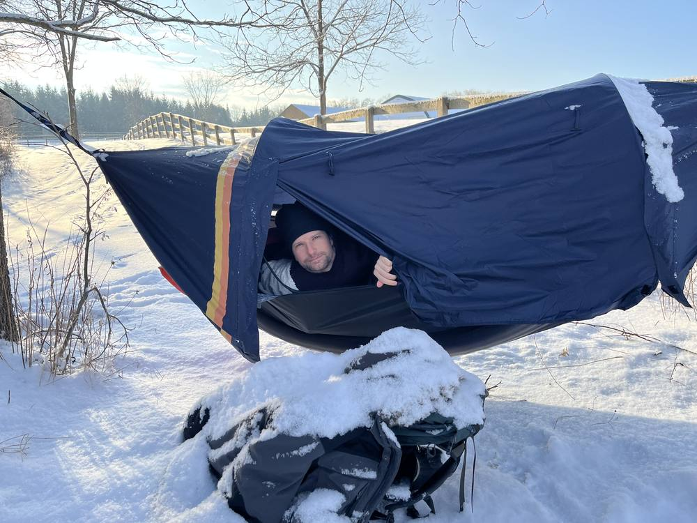
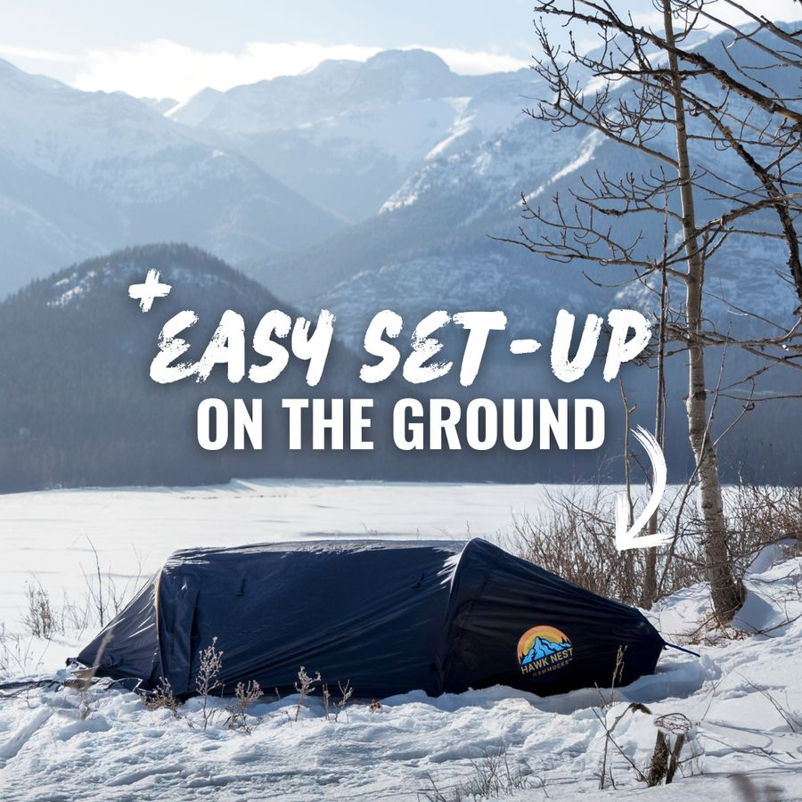
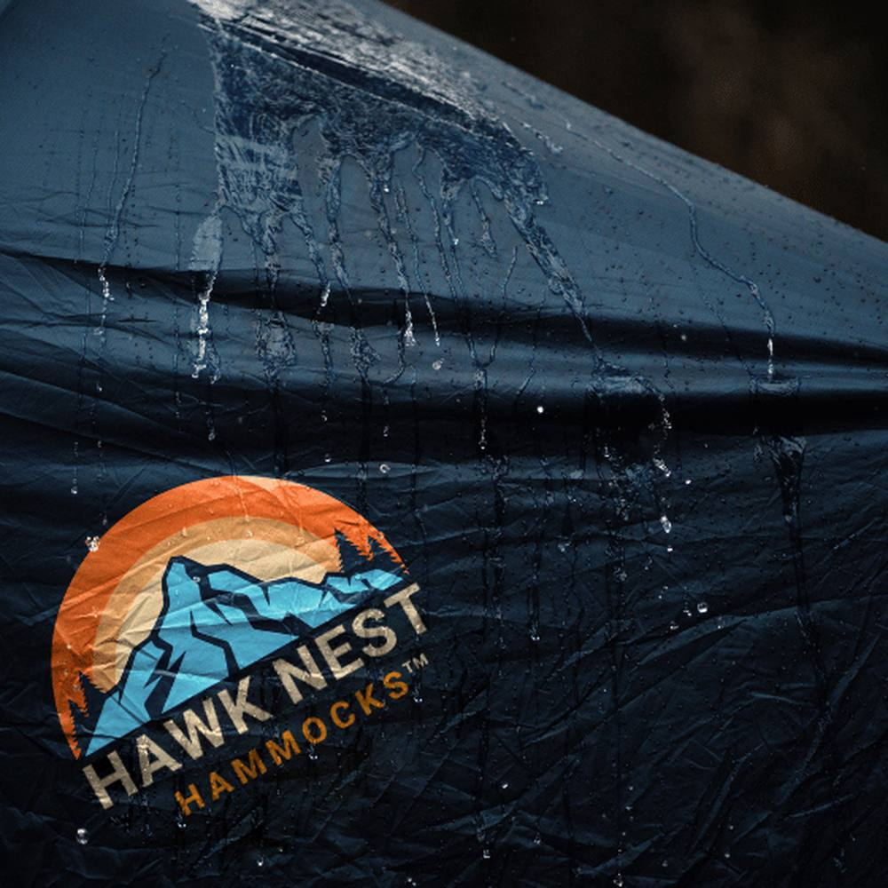
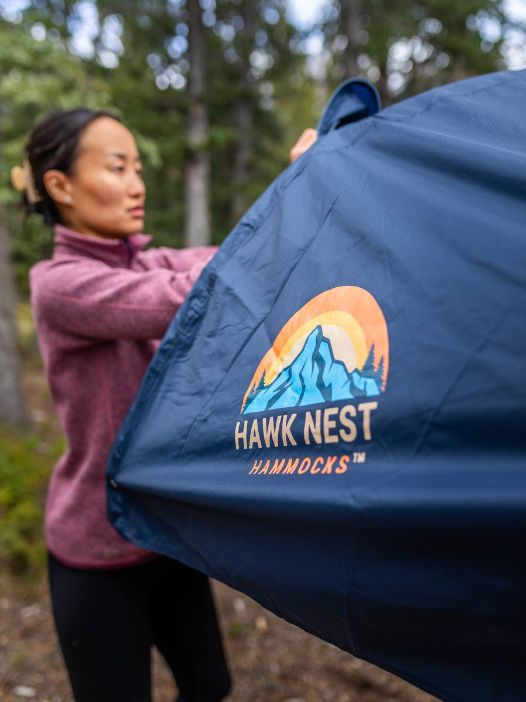
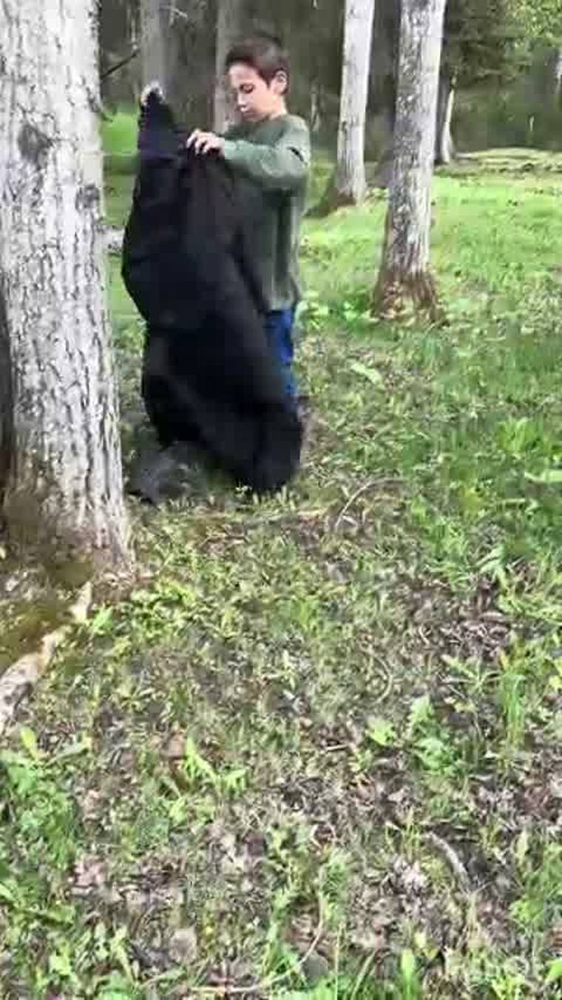
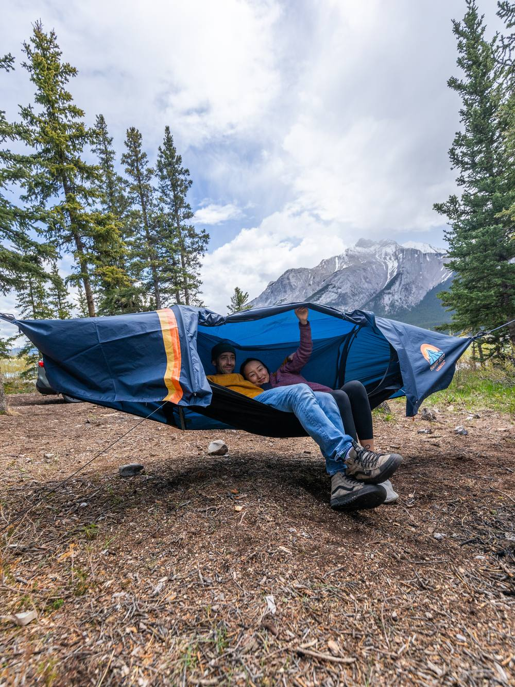

Ken Sutherland, after three weeks on the road
You know the night this is about. You hiked all day, found the flattest ground there was — which wasn’t flat — and lay down on it. A root found your hip. The cold came up through the floor. At two in the morning you were still turning over, doing the arithmetic on how many hours were left until it got light.
Everyone who sleeps outside has had that night. Most people decide it’s the price of admission. This page is about the people who stopped accepting that, and one of them in particular.

That is the part most people get wrong about it. You treat each terrible night as bad luck — wrong site, wrong weather, wrong day. Then you start counting, and it is most of them. Four nights out, one of them decent. That is a hobby you quietly stop booking.
What actually happens on the ground is not complicated. You are lying on a cold, hard, uneven surface that pulls heat out of you all night, and there is a limit to how much foam you can carry up a mountain before the cure is worse than the disease.
A thicker pad. Three inches of air, and a pack that no longer closes. It helps with the roots. It does nothing about the slope, and you still wake up cold at four.
A better tent. Lighter, more expensive, same floor, same ground underneath it. A nicer container for the same problem.
Better sites. An hour of daylight burned every evening hunting for flat, dry, clear ground. In real terrain that spot is often not there, so you pitch on the least bad option and pay for it at 2am.
Pills, earplugs, a nightcap. The things people quietly try. They make you unconscious. They do not make you rested.
Somewhere in that list is the evening most people have had: lying awake on a slope in the rain, water tracking under the groundsheet, thinking the thought nobody says out loud — maybe I am getting too old to enjoy this.
Free shipping · duties included · 30-day refund
The realisation is almost annoying in how obvious it is. The problem was never the pad, the tent or the technique. It was the insistence on lying on the ground when there were two trees standing right there.
So people buy a hammock. And here is the honest bit, the one most hammock evangelists skip: a plain hammock usually makes it worse.
No bug net, so the first warm night is unusable. No cover, so the first wet night is worse. And below about 50°F the air moving underneath strips heat off your back faster than the ground ever did, because your sleeping bag is squashed flat beneath you and the insulation in it does nothing at all.
The usual answer is to build a system: hammock, tarp, bug net, underquilt, plus the cord and stakes to rig it all. It works. Plenty of people camp that way for years.
It is also four things to pitch in the dark, four things to pack away wet, and four things to forget. Anyone who has put a tarp up backwards in the rain and spent twenty minutes undoing it knows exactly why somebody eventually sewed the whole thing into one shelter.

This is where we stop generalising. Ken Sutherland rode from Manitoba to the west coast and back, three weeks, sleeping in a Hawk Nest nearly every night. He wrote to us afterwards. This is his letter, unedited.
No level ground, no room for a tent, no trees… no problem! The Hawk Nest Hammock does it all!
I have just returned from a 3 week motorcycle/salmon fishing trip on Vancouver Island BC. I travelled from Winnipeg MB. All but a couple nights were spent in my Hawk Nest Hammock using the Hawk Nest inflatable sleeping pad. I’m extremely pleased with comfort and performance of both products.
Temperatures were between 5°C (40°F) and 22°C (72°F) with 3 nights of rain which was a complete non-issue, absolutely zero leaks or drips in the hammock.
I bought an extra set of hammock straps because one strap often won’t make it around some of the huge trees in the Pacific Northwest. Set up takes about 5 minutes once you’ve done it a few times.
3 nights were spent either on the beach or in areas where trees were too small to support a hammock. Setup on the ground was again, quick and easy. Not much clearance above when pitched on the ground but enough room to read or roll over.
When it looked like my Hawk Nest inflatable sleeping pad would not arrive in time for my departure, Lukas offered to send one ahead to my sons place in Victoria BC at no charge, so it would be there when I arrived. That’s above and beyond good customer service.
I’m looking forward to many enjoyable sleeps in my Hawk Nest Hammock on future motorcycle, kayaking, hiking and canoeing adventures. Hawk Nest’s hammock and sleeping pad are well thought out, quality products at a very reasonable price.

“I’ll be cold in it.” You would be, in a bare hammock. With a pad held in the pocket under your back you are insulated from the moving air, which is the whole mechanism. Ken slept in it down to 50°F on that trip and had nothing to say about the cold at all — the thing he singled out was the rain.
“Temperatures were between 5°C (40°F) and 22°C (72°F) with 3 nights of rain which was a complete non-issue, absolutely zero leaks or drips in the hammock.”
Ken Sutherland, on three weeks of west coast weather
“I’ll be folded up inside it.” This is what the rigid support poles are for. They hold the fly and the net up and off you, so there is genuine interior space and headroom above your face instead of fabric resting on it. Lying at a slight angle rather than straight down the middle helps as well, and takes one night to get used to.
“There won’t always be trees.” Sometimes there won’t — on a beach, above the treeline, or where the trees are too small to take the load. It pitches on the ground as well. You lose the height and most of the clearance, but it still works as a shelter, and that is not a theoretical answer. Three of Ken’s nights were exactly that.
“3 nights were spent either on the beach or in areas where trees were too small to support a hammock. Setup on the ground was again, quick and easy. Not much clearance above when pitched on the ground but enough room to read or roll over.”
Ken Sutherland, on the nights with nothing to hang from

One more thing worth repeating from his letter, because it is the question everybody actually has: how long does it take to put up?
“Set up takes about 5 minutes once you’ve done it a few times.”
Ken Sutherland. Your first go will be slower.
Free shipping · duties included · 30-day refund
Two things are going on, and one of them is genuinely well studied.
The first is heat, which is the diagram further up. Lying on the ground you lose warmth by conduction into a very large, very cold object. Off the ground that path is gone.
The second is the gentle movement, and there is real research on it.
In a 2019 study published in Current Biology, researchers had healthy adults sleep one night on a still bed and one on an identical bed rocking gently side to side. On the rocking bed they fell into deep sleep about 6.5 minutes faster, spent around 5% more of the night in those deeper stages, and scored slightly better on a memory test the next morning.
Perrault et al., “Whole-Night Continuous Rocking Entrains Spontaneous Neural Oscillations with Benefits for Sleep and Memory,” Current Biology, 2019. Worth saying plainly: that was 18 young adults on a motorised bed, not a hammock in a forest. It is evidence that gentle motion helps people sleep deeper — not proof about this product.


Real review titles from verified buyers, newest first.


Left: a customer’s own footage, setting one up.
There is no warehouse full of stock. A production run gets committed, sold, and then the next one gets built. Batches 1, 2 and 3 all sold out before they landed. Batch 4 is 1,500 units and it is the last run of 2026.
That is the honest reason it is a pre-order rather than a buy button. Reserving funds the run. When Batch 4 is gone the price goes to $229 and the free upgrades end, and there is no restock date after that.
The upgrades people normally add are included while this run lasts.
Free shipping · duties included · 30-day refund
Ships from South Carolina, arriving October 15
Batch 4 lands October 15 and ships in the order it was reserved. You get tracking the moment yours leaves the warehouse.
We build in limited runs and don’t overbuild. Batches 1, 2 and 3 all sold out before they landed. Reserving from the next run is the only way to guarantee one.
The price goes to $229 and the free upgrades end. No restock date is set beyond that.
Navy. It’s the only color on the current production run.
South Carolina, with duties included. No customs bill on arrival.
Yes. The bundle applies per hammock, so a second one is the same $159 with its own full set of upgrades.
30 days, full refund, no questions. Anything defective is replaced under the lifetime warranty.
Ken put it better than any of our copy ever has: no level ground, no room for a tent, no trees, no problem. If that sounds like the trip you have been putting up with, Batch 4 is the one you can still get on.
Reserve yours — $15930 days to change your mind. Full refund, no questions.